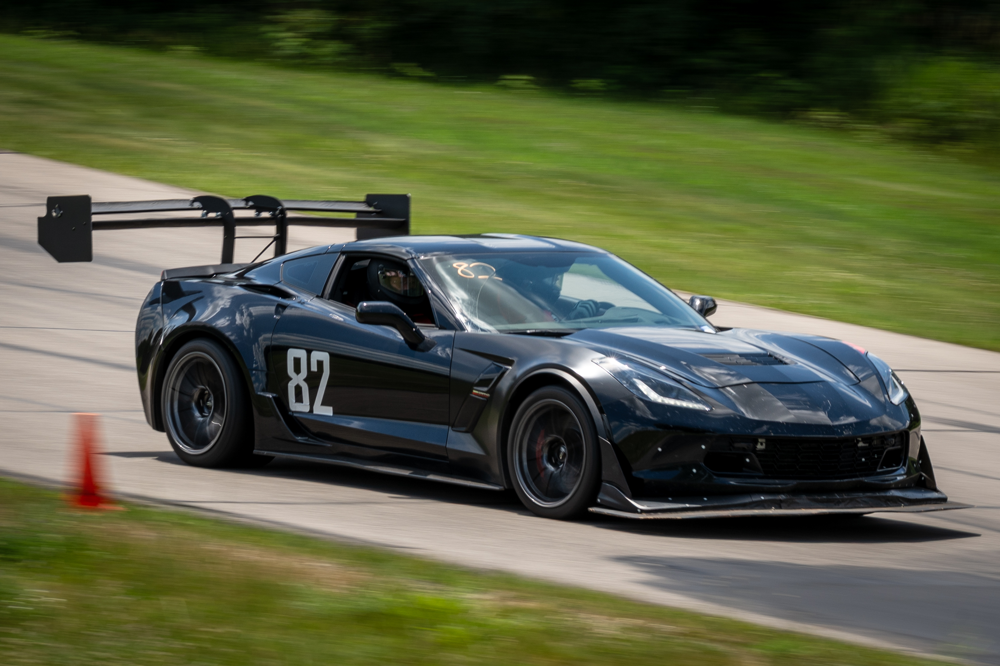

CHP
E8kW Micro-CHP
Engine-generator, PMG, inverter interface, heat recovery, controls, and residential thermal/electrical use cases.
 Shaojie Chen
Microgrid / CHP Engineer
Shaojie Chen
Microgrid / CHP Engineer
Professional Side · Microgrid / CHP / DER
I connect engine-generator hardware, hybrid inverters, BESS, controls, thermal loads, field feedback, and test data into practical energy-system decisions.


Motorsport Side · Active Aero / Vehicle Data / Controls
I build and test aero hardware, CAN-driven embedded controls, actuator systems, track-data workflows, sensor instrumentation, and CFD/CAD-driven design iterations.



Professional Showcases
Engine-generator, PMG, inverter interface, heat recovery, controls, and residential thermal/electrical use cases.
Bypass behavior, ATS timing, efficiency, generator interface checks, DC charging, and ripple measurement.
Generator, inverter, battery, sensor, thermal-load, and residential load emulation for repeatable system validation.
Remote monitoring, access strategy, controller workflow, field technician process, and software-update risk framing.
Motorsport Showcases
Two-element rear wing, front aero integration, actuator feedback, and driver-state based control modes.
CAN decoding, throttle/brake/speed logic, steering-wheel inputs, watchdogs, filtering, and manual override.
Gingerman testing, suspension travel analysis, Pi Toolbox review, and test-analyze-update development loop.
Travel sensing, load measurement concepts, tire temperature imaging, and chassis/aero instrumentation planning.
Professional Capability Stack
Motorsport Capability Stack